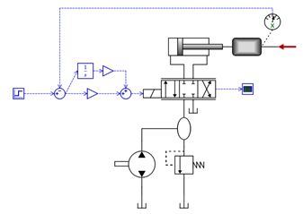

Step-By-Step Example
- Open the model, "Position Servo" (found under Help-Examples Models). In this example a hydraulic position servo with a PI-controller is used.

- Click the 'Optimization' icon. It is found in the simulation toolbar, next to the simulate button. It can also be reached from the menus.
| Open Optimization Dialog |
- Select general settings. Specify number of iterations, number of search points, reflection coefficient, randomization and forgetting factor and tolerances for convergence. Also choose whether to plot each iteration (will slow down optimization). In the example we choose 100 iterations, 4 search points, reflection coefficient of 1.3, randomization factor of 0.3, and a forgetting factor of 0. For tolerance values we use default settings.
- Select parameters. A list of all components in the model is shown. Expanding a component will show its parameters. Check the parameters that shall be optimized, and they will appear below the list. Here the minimum and maximum values for each parameter can be chosen. There is also an option to use logarithmic parameter scaling. This is useful when values for the parameters can vary over several orders of magnitude. Keep in mind that all parameters must be strictly greater than zero to use this.
In this example, we want to optimize the PI-controller parameters. The parameters to optimize is therefore the gains called GainP and GainI. Considering the unit conversion from cylinder position [m] to spool position [m], reasonable maximum values are about 0.1.
- Select objective functions. The next tab also contains a list with the components. This time, however, expanding them will reveal a list of their ports. Expanding a port will show a list of variables in the port. Below the list are two drop down menus. Here it is possible to choose an objective function and whether to maximize or minimize it. Select a function and an appropriate number of variables, and then click "Add Function". For each function it is then possible to select weight factor, normalization factor, exponential factor and provide other data if applicable.
For the example we want to optimize a step response so that the cylinder position as closely as possible matches the step input signal. We therefore add a "Minimize average absolute difference" function between step output and position sensor output. We also want to penalize the overshot over the final value. This is done by adding a "Minimize overshot over value" function for the position sensor output. We use a weight factor of 2.0, because it is considered important.
- Generate Python code. When all is finished, press the "Generate Script" button. This will produce Python code from the settings in the first three tabs, and display the output in the last tab.
- Investigate the code. Before starting the optimization it is now possible to investigate and make changes to the script if desired. This is not needed in the example.
- Run optimization. Pressing the "Run Optimization" button will launch the script file. It will take control of the program and simulate the model as desired. It will stop either by convergence, or by reaching the maximum number of iterations. In the example it should find an optimum somewhere around GainI,k = 0.0028 and GainP,k = 0.0065.